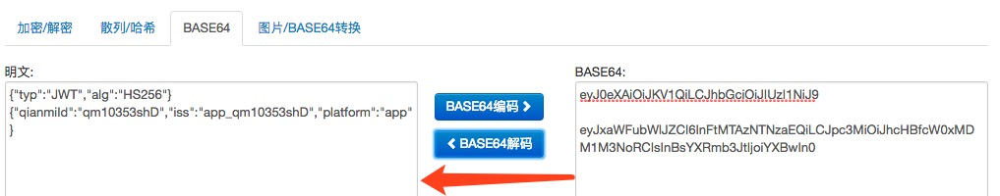

理解JWT的使用场景和优劣
经过前面两篇文章《JSON Web Token - 在Web应用间安全地传递信息》《八幅漫画理解使用JSON Web Token设计单点登录系统》的科普，相信大家应该已经知道了 JWT 协议是什么了。至少看到
这样形如 A.B.C 的字符串时能敏感地认出这是使用了 jwt。发了这两篇文章后，有不少读者在文末留言，表达了对 jwt 使用方式的一些疑惑，以及到底哪些场景适合使用 jwt。我并不是 jwt 方面的专家，和不少读者一样，起初研究时我也存在相同疑惑，甚至在逐渐接触后产生了更大的疑惑，经过这段时间项目中的使用和一些自己思考，把个人的总结整理成此文。
编码，签名，加密
这些基础知识简单地介绍下，千万别搞混了三个概念。在 jwt 中恰好同时涉及了这三个概念，笔者用大白话来做下通俗的讲解（非严谨定义，供个人理解）
编码(encode)和解码(decode)
一般是编码解码是为了方便以字节的方式表示数据，便于存储和网络传输。整个 jwt 串会被置于 http 的 Header 或者 url 中，为了不出现乱码解析错误等意外，编码是有必要的。在 jwt 中以 . 分割的三个部分都经过 base64 编码(secret 部分是否进行 base64 编码是可选的，header 和 payload 则是必须进行 base64 编码)。注意，编码的一个特点：编码和解码的整个过程是可逆的。得知编码方式后，整个 jwt 串便是明文了，随意找个网站验证下解码后的内容：

所以注意一点，payload 是一定不能够携带敏感数据如密码等信息的。
签名(signature)
签名的目的主要是为了验证我是“我”。jwt 中常用的签名算法是 HS256，可能大多数人对这个签名算法不熟悉，但 md5,sha 这样的签名算法肯定是为人熟知的，签名算法共同的特点是整个过程是不可逆的。由于签名之前的主体内容(header,payload)会携带在 jwt 字符串中，所以需要使用带有密钥(yuè)的签名算法，密钥是服务器和签发者共享的。header 部分和 payload 部分如果被篡改，由于篡改者不知道密钥是什么，也无法生成新的 signature 部分，服务端也就无法通过，在 jwt 中，消息体是透明的，使用签名可以保证消息不被篡改。
前面转载的文章中，原作者将 HS256 称之为加密算法，不太严谨。
加密(encryption)
加密是将明文信息改变为难以读取的密文内容，使之不可读。只有拥有解密方法的对象，经由解密过程，才能将密文还原为正常可读的内容。加密算法通常按照加密方式的不同分为对称加密(如 AES)和非对称加密(如 RSA)。你可能会疑惑：“jwt 中哪儿涉及加密算法了？”，其实 jwt 的 第一部分(header) 中的 alg 参数便可以指定不同的算法来生成第三部分(signature)，大部分支持 jwt 的框架至少都内置 rsa 这种非对称加密方式。这里诞生了第一个疑问
疑问：一提到 rsa，大多数人第一想到的是非对称加密算法，而 jwt 的第三部分明确的英文定义是 signature，这不是矛盾吗？
划重点！
rsa 加密和rsa 签名 是两个概念！(吓得我都换行了)
这两个用法很好理解：
- 既然是加密，自然是不希望别人知道我的消息，只有我自己才能解密，所以公钥负责加密，私钥负责解密。这是大多数的使用场景，使用 rsa 来加密。
- 既然是签名，自然是希望别人不能冒充我发消息，只有我才能发布签名，所以私钥负责签名，公钥负责验证。
所以，在客户端使用 rsa 算法生成 jwt 串时，是使用私钥来“加密”的，而公钥是公开的，谁都可以解密，内容也无法变更（篡改者无法得知私钥）。
所以，在 jwt 中并没有纯粹的加密过程，而是使加密之虚，行签名之实。
什么场景该适合使用jwt？
来聊聊几个场景，注意，以下的几个场景不是都和jwt贴合。
- 一次性验证
比如用户注册后需要发一封邮件让其激活账户，通常邮件中需要有一个链接，这个链接需要具备以下的特性：能够标识用户，该链接具有时效性（通常只允许几小时之内激活），不能被篡改以激活其他可能的账户…这种场景就和 jwt 的特性非常贴近，jwt 的 payload 中固定的参数：iss 签发者和 exp 过期时间正是为其做准备的。
- restful api的无状态认证
使用 jwt 来做 restful api 的身份认证也是值得推崇的一种使用方案。客户端和服务端共享 secret；过期时间由服务端校验，客户端定时刷新；签名信息不可被修改…spring security oauth jwt 提供了一套完整的 jwt 认证体系，以笔者的经验来看：使用 oauth2 或 jwt 来做 restful api 的认证都没有大问题，oauth2 功能更多，支持的场景更丰富，后者实现简单。
- 使用 jwt 做单点登录+会话管理(不推荐)
在《八幅漫画理解使用JSON Web Token设计单点登录系统》一文中提及了使用 jwt 来完成单点登录，本文接下来的内容主要就是围绕这一点来进行讨论。如果你正在考虑使用 jwt+cookie 代替 session+cookie ，我强力不推荐你这么做。
首先明确一点：使用 jwt 来设计单点登录系统是一个不太严谨的说法。首先 cookie+jwt 的方案前提是非跨域的单点登录(cookie 无法被自动携带至其他域名)，其次单点登录系统包含了很多技术细节，至少包含了身份认证和会话管理，这还不涉及到权限管理。如果觉得比较抽象，不妨用传统的 session+cookie 单点登录方案来做类比，通常我们可以选择 spring security（身份认证和权限管理的安全框架）和 spring session（session 共享）来构建，而选择用 jwt 设计单点登录系统需要解决很多传统方案中同样存在和本不存在的问题，以下一一详细罗列。
jwt token泄露了怎么办？
前面的文章下有不少人留言提到这个问题，我则认为这不是问题。传统的 session+cookie 方案，如果泄露了 sessionId，别人同样可以盗用你的身份。扬汤止沸不如釜底抽薪，不妨来追根溯源一下，什么场景会导致你的 jwt 泄露。
遵循如下的实践可以尽可能保护你的 jwt 不被泄露：使用 https 加密你的应用，返回 jwt 给客户端时设置 httpOnly=true 并且使用 cookie 而不是 LocalStorage 存储 jwt，这样可以防止 XSS 攻击和 CSRF 攻击（对这两种攻击感兴趣的童鞋可以看下 spring security 中对他们的介绍CSRF,XSS）
你要是正在使用 jwt 访问一个接口，这个时候你的同事跑过来把你的 jwt 抄走了，这种泄露，恕在下无力
secret如何设计
jwt 唯一存储在服务端的只有一个 secret，个人认为这个 secret 应该设计成和用户相关的，而不是一个所有用户公用的统一值。这样可以有效的避免一些注销和修改密码时遇到的窘境。
注销和修改密码
传统的 session+cookie 方案用户点击注销，服务端清空 session 即可，因为状态保存在服务端。但 jwt 的方案就比较难办了，因为 jwt 是无状态的，服务端通过计算来校验有效性。没有存储起来，所以即使客户端删除了 jwt，但是该 jwt 还是在有效期内，只不过处于一个游离状态。分析下痛点：注销变得复杂的原因在于 jwt 的无状态。我提供几个方案，视具体的业务来决定能不能接受。
- 仅仅清空客户端的 cookie，这样用户访问时就不会携带 jwt，服务端就认为用户需要重新登录。这是一个典型的假注销，对于用户表现出退出的行为，实际上这个时候携带对应的 jwt 依旧可以访问系统。
- 清空或修改服务端的用户对应的 secret，这样在用户注销后，jwt 本身不变，但是由于 secret 不存在或改变，则无法完成校验。这也是为什么将 secret 设计成和用户相关的原因。
- 借助第三方存储自己管理 jwt 的状态，可以以 jwt 为 key，实现去 redis 一类的缓存中间件中去校验存在性。方案设计并不难，但是引入 redis 之后，就把无状态的 jwt 硬生生变成了有状态了，违背了 jwt 的初衷。实际上这个方案和 session 都差不多了。
修改密码则略微有些不同，假设号被到了，修改密码（是用户密码，不是 jwt 的 secret）之后，盗号者在原 jwt 有效期之内依旧可以继续访问系统，所以仅仅清空 cookie 自然是不够的，这时，需要强制性的修改 secret。在我的实践中就是这样做的。
续签问题
续签问题可以说是我抵制使用 jwt 来代替传统 session 的最大原因，因为 jwt 的设计中我就没有发现它将续签认为是自身的一个特性。传统的 cookie 续签方案一般都是框架自带的，session 有效期 30 分钟，30 分钟内如果有访问，session 有效期被刷新至 30 分钟。而 jwt 本身的 payload 之中也有一个 exp 过期时间参数，来代表一个 jwt 的时效性，而 jwt 想延期这个 exp 就有点身不由己了，因为 payload 是参与签名的，一旦过期时间被修改，整个 jwt 串就变了，jwt 的特性天然不支持续签！
如果你一定要使用 jwt 做会话管理（payload 中存储会话信息），也不是没有解决方案，但个人认为都不是很令人满意
- 每次请求刷新 jwt
jwt 修改 payload 中的 exp 后整个 jwt 串就会发生改变，那…就让它变好了，每次请求都返回一个新的 jwt 给客户端。太暴力了，不用我赘述这样做是多么的不优雅，以及带来的性能问题。
但，至少这是最简单的解决方案。
- 只要快要过期的时候刷新 jwt
一个上述方案的改造点是，只在最后的几分钟返回给客户端一个新的 jwt。这样做，触发刷新 jwt 基本就要看运气了，如果用户恰巧在最后几分钟访问了服务器，触发了刷新，万事大吉；如果用户连续操作了 27 分钟，只有最后的 3 分钟没有操作，导致未刷新 jwt，无疑会令用户抓狂。
- 完善 refreshToken
借鉴 oauth2 的设计，返回给客户端一个 refreshToken，允许客户端主动刷新 jwt。一般而言，jwt 的过期时间可以设置为数小时，而 refreshToken 的过期时间设置为数天。
我认为该方案并可行性是存在的，但是为了解决 jwt 的续签把整个流程改变了，为什么不考虑下 oauth2 的 password 模式和 client 模式呢？
- 使用 redis 记录独立的过期时间
实际上我的项目中由于历史遗留问题，就是使用 jwt 来做登录和会话管理的，为了解决续签问题，我们在 redis 中单独会每个 jwt 设置了过期时间，每次访问时刷新 jwt 的过期时间，若 jwt 不存在与 redis 中则认为过期。
tips:精确控制 redis 的过期时间不是件容易的事，可以参考我最近的一篇借助于 spring session 讲解 redis 过期时间的排坑记录。
同样改变了 jwt 的流程，不过嘛，世间安得两全法。我只能奉劝各位还未使用 jwt 做会话管理的朋友，尽量还是选用传统的 session+cookie 方案，有很多成熟的分布式 session 框架和安全框架供你开箱即用。
jwt,oauth2,session千丝万缕的联系
具体的对比不在此文介绍，就一位读者的留言回复下它的提问
这么长一个字符串，还不如我把数据存到数据库，给一个长的很难碰撞的key来映射，也就是专用token。
这位兄弟认为 jwt 太长了，是不是可以考虑使用和 oauth2 一样的 uuid 来映射。这里面自然是有问题的，jwt 不仅仅是作为身份的认证（验证签名是否正确，签发者是否存在，有限期是否过期），还在其 payload 中存储着会话信息，这是 jwt 和 session 的最大区别，一个在客户端携带会话信息，一个在服务端存储会话信息。如果真的是要将 jwt 的信息置于在共享存储中，那再找不到任何使用 jwt 的意义了。
jwt 和 oauth2 都可以用于 restful 的认证，就我个人的使用经验来看，spring security oauth2 可以很好的使用多种认证模式：client 模式，password 模式，implicit 模式（authorization code 模式不算单纯的接口认证模式），也可以很方便的实现权限控制，什么样的 api 需要什么样的权限，什么样的资源需要什么样的 scope…而 jwt 我只用它来实现过身份认证，功能较为单一（可能是我没发现更多用法）。
总结
在 web 应用中，使用 jwt 代替 session 存在不小的风险，你至少得解决本文中提及的那些问题，绝大多数情况下，传统的 cookie-session 机制工作得更好。jwt 适合做简单的 restful api 认证，颁发一个固定有效期的 jwt，降低 jwt 暴露的风险，不要对 jwt 做服务端的状态管理，这样才能体现出 jwt 无状态的优势。
可能对 jwt 的使用场景还有一些地方未被我察觉，后续会研究下 spring security oauth jwt 的源码，不知到时会不会有新发现。
Copyright © 2015 Powered by MWeb, Theme used GitHub CSS.